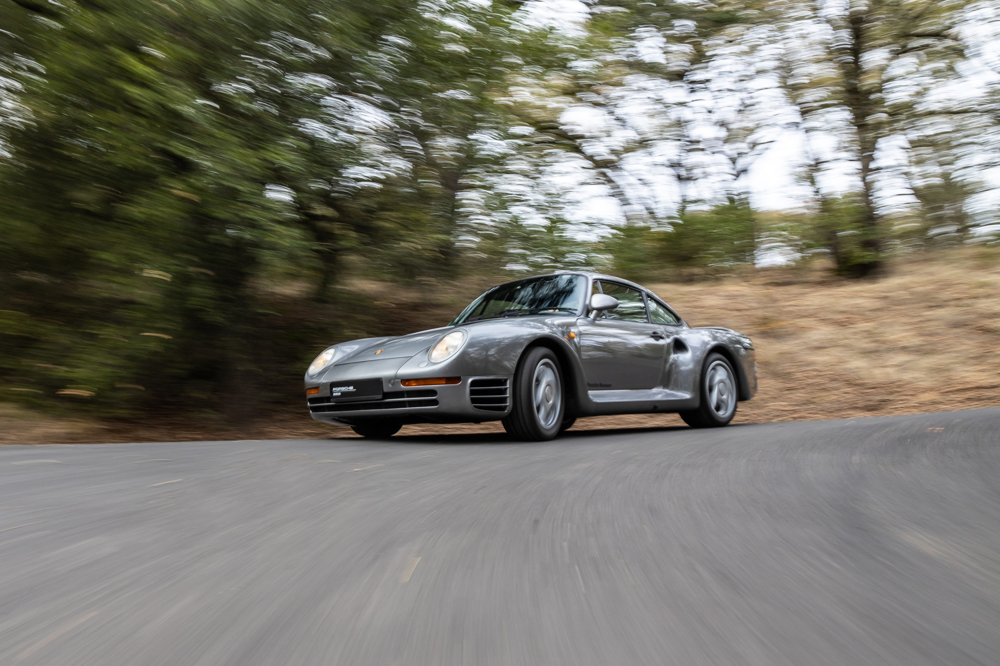
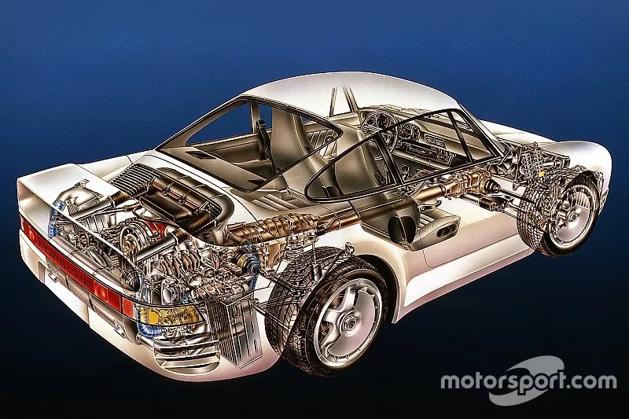
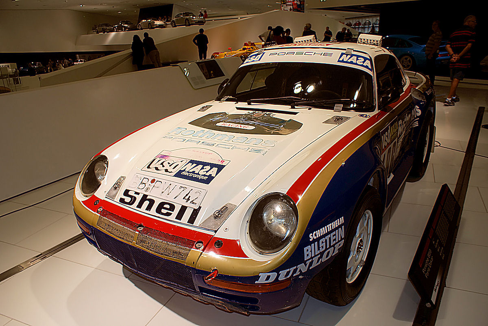
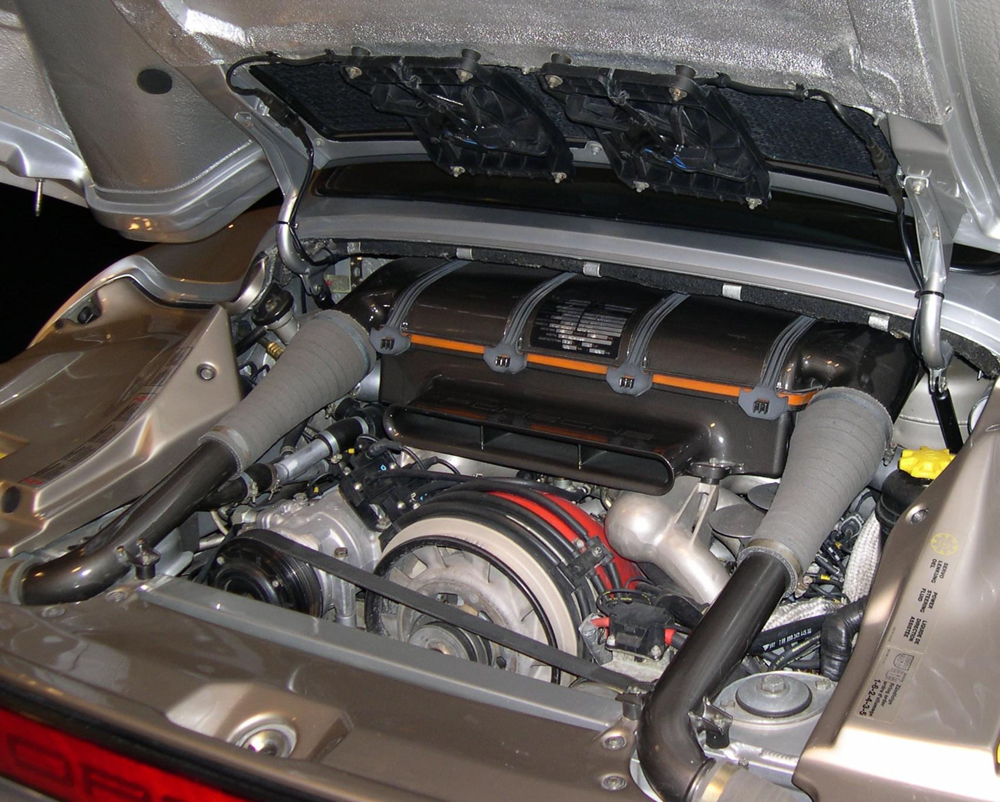
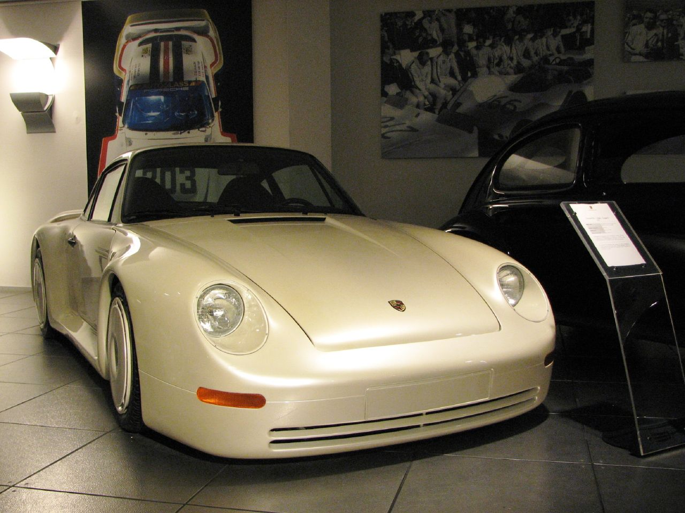
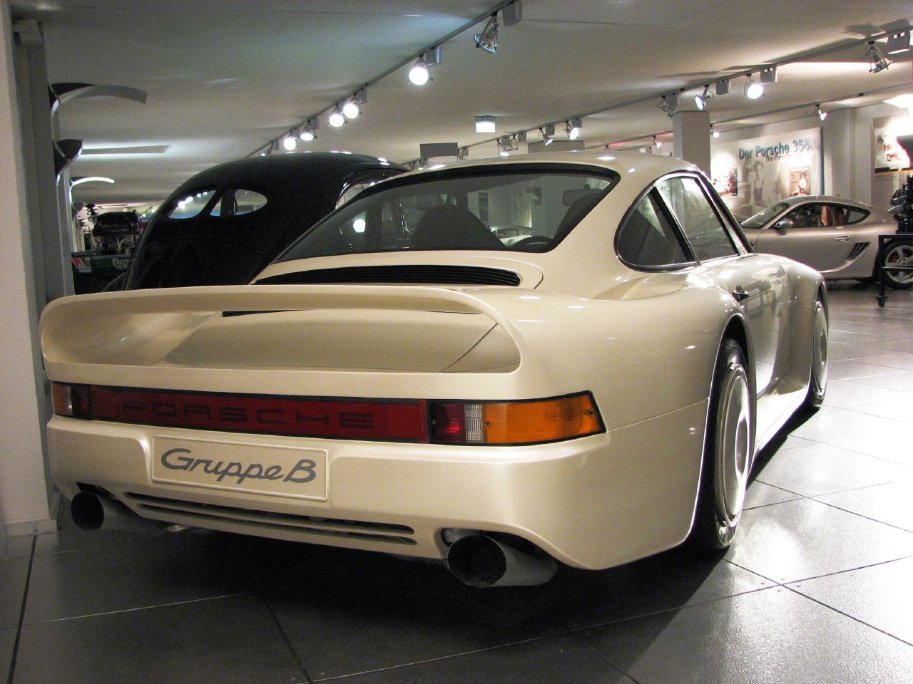

The written primary source for this gallery is Csere, Csaba. "1987 Porsche 959 Archived Test." Car and Driver, November 1987.1
Tier 1
Primary Source Artifacts


Tier 1
Secondary Source Artifacts

Tier 2
Magazine & Press Coverage

Tier 2
Designers, Builders, and Owners


Tier 2
Design & Engineering


Tier 2
Launch & Motor Shows





The 959 was originally developed as a racing homologation special for Group B rallying and endurance racing. It became the most technologically advanced road car of its era, featuring electronically managed all-wheel drive, adaptive suspension, hollow-spoke magnesium wheels, and the world's first production tire pressure monitoring system.
Conducted at Porsche's Weissach development facility. The test documented the 959's performance for American readers, capturing firsthand the staggering gap between the 959 and every contemporary road car. The original print spread includes performance data and photography from the era.
This Car and Driver archived test shows some of the first raw reactions to this car and the technology that was so ahead of its time. It was one of the first production cars to have all-wheel drive, tire pressure sensors, and a PDK gearbox prototype that went on to become part of modern Porsches and is still used today. Csaba Csere, writing in the November 1987 issue, opened by saying the word perfect was difficult to avoid, and the test conducted at the Hockenheim-Ring circuit recorded a 0-60 of 3.6 seconds and a top speed of 190 mph. This car was not just a race car, it was a car that defined engineering for the future, and it is often overlooked for the niche technology packed into it that most people do not know about.
Sources for This Gallery
Csere, Csaba. "1987 Porsche 959, Archived Test." Car and Driver, 1987.
A road test from Car and Driver in 1987, conducted at Porsche's Weissach facility. A performance evaluation written for American readers covering how technologically advanced the car was firsthand, with all the 0–60 data and details about the car. Contains original print photos and magazine spreads with performance specifics.
View Source ↗Kimble, David. "Cutaway Classic: Explore the Amazing Porsche 959." Motorsport.com, June 8, 2016.
Argues the Porsche 959 was not just fast for its time, but represented extremely new technology for the era: electronically managed all-wheel drive, advanced aerodynamics, and a gearbox prototype that became standard for the next generation of Porsches. The first production car to have tire pressure sensors. Provides technical specifics that show how far ahead of its time the car was.
View Source ↗Footnotes
- Csere, "1987 Porsche 959 Archived Test."
- Csere, "1987 Porsche 959 Archived Test."
- Csere, "1987 Porsche 959 Archived Test."
- Kimble, Porsche 959 Cutaway Illustration.
- Valder137, Porsche 959 1986 Paris-Dakar Rothmans Racer.
- Uncredited, 1988 Porsche 959 Komfort, Ralph Lauren Collection.
- Uncredited, 1988 Porsche 959 Interior, Ralph Lauren Collection.
- Sfoskett, Porsche 959 Engine.
- Rouk40130, Porsche 959 Mechanical Sketch.
- Porsche AG, Porsche 959 'Gruppe B' Concept, Rothmans Livery.
- Porsche AG, 'Gruppe B' Concept at 1983 Frankfurt IAA.
- leduardo, Porsche 959 Concept Car Gruppe B 1983.
- leduardo, Porsche 959 Concept Car Gruppe B 1983 (rear).
- Migl, Porsche 961 (1987 Le Mans No. 203).